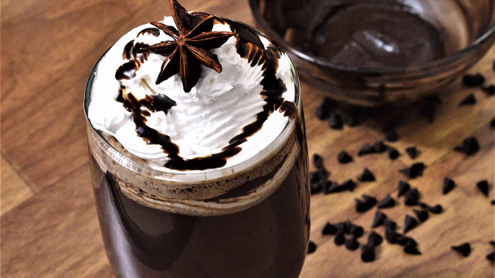
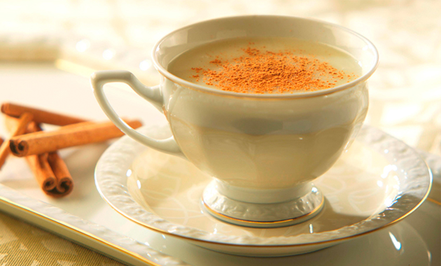
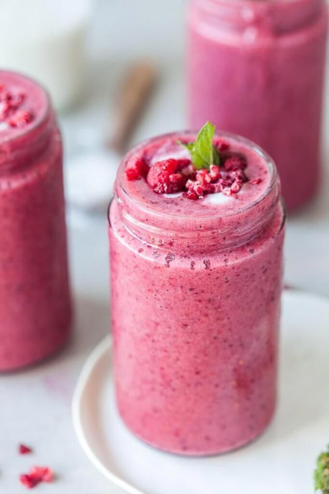

MIS301:4 beverages you should be drinking
Duygu Aktukmak
Last updated Apr 3, 2020
1. Coffee
Coffee Reference
Coffee is a brewed drink prepared from roasted coffee beans, the seeds
of berries from certain Coffea species. Once ripe, coffee berries are
picked, processed, and dried. Dried coffee seeds (referred to as
"beans") are roasted to varying degrees, depending on the desired
flavor. Roasted beans are ground and then brewed with near-boiling water
to produce the beverage known as coffee.
Recommendation: Misto Coffee

2. Hot Chocolate
Hot Chocolate Reference
Hot chocolate, also known as drinking chocolate, cocoa, and as chocolate
tea in Nigeria, is a heated drink consisting of shaved chocolate, melted
chocolate or cocoa powder, heated milk or water, and usually a
sweetener. Hot chocolate may be topped with whipped cream or
marshmallows. Hot chocolate made with melted chocolate is sometimes
called drinking chocolate, characterized by less sweetness and a thicker
consistency.
Recommendation: White Hot Chocolate

3. Salep
Salep
Salep, also spelled sahlep or sahlab,is a flour made from the tubers of
the orchid genus Orchis (including species Orchis mascula and Orchis
militaris). These tubers contain a nutritious, starchy polysaccharide
called glucomannan. Salep flour is consumed in beverages and desserts,
especially in the cuisines of the former Ottoman Empire, notably in the
Levant where it is a traditional winter beverage. An increase in
consumption is causing local extinctions of orchids in parts of Turkey
and Iran.
Recommendation: Cinnamon Salep

4. Smoothie
Smoothie
A smoothie is a thick and creamy beverage made from pureed raw fruit,
vegetables, and sometimes dairy products (e.g. milk, yogurt, ice-cream
or cottage cheese), typically using a blender.Smoothies may be made
using other ingredients, such as water, crushed ice, fruit juice,
sweeteners (e.g. honey, sugar, stevia, or syrup), whey powder, plant
milk, nuts, nut butter, seeds, tea, chocolate, herbal supplements, or
nutritional supplements. A smoothie containing dairy products is similar
to a milkshake, though the latter typically contains less fruit and
often uses ice cream or frozen yogurt.
Recommendation: Frozen Smoothie
